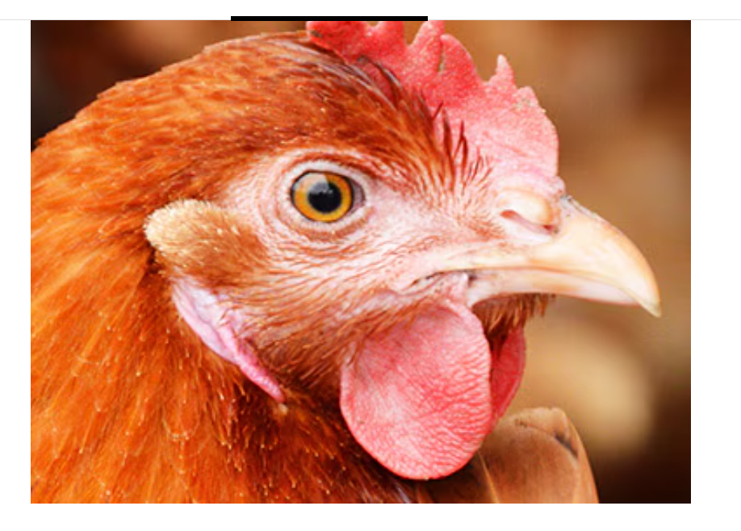

THERMOCARE +C
IMPROVED AND THERMOCARE +C NH,IONS ENRICHEDWITH/ NITROGEN BEAT THE HEAT (Acombination of Electrolytes, Vitamins & Probiotics) WITH Helps Birds adopttorising temperature andd discomfort of the summer months,,Relieves Stress, Provides Instant Energy, Corrects Electrolyte imbalance, reduces high Corticosterone Levels, Lowers MortalityRate, Improves Feed Intakeand FeedConversion. THERMOCARE + C contains Electrolytes, Buffer Acids, Vitamin C, Sodium Salicviate polvsaccharides and Lactobacillus improved withAMMONIUM ION' and NITROGEN MOIETy to take care of the physiological variations during stress, especially during heat stress and brooding temperature variations, THERMOCARE +C also improves the nutrientavailabilityby virtue of improved digestion,absorption and metabolism made possible by the probiotic and instantlyavailableenergy, HEATSTRESS, A DISASTER IN POULTRYINDUSTRY Severe economic losses due to heat stress is a common problem faced by the Indian poultry farmers. Electrolyte therapy, although appears to restore the electrolyte and water balance ofthe system during stress conditions, is unable toeffectivelycontrol the losses as the variation in the birds's physiology is multifactorial.

Technical overview
IMPROVED AND THERMOCARE +C NH,IONS ENRICHEDWITH/ NITROGEN BEAT THE HEAT (Acombination of Electrolytes, Vitamins & Probiotics) WITH Helps Birds adopttorising temperature andd discomfort of the summer months,,Relieves Stress, Provides Instant Energy, Corrects Electrolyte imbalance, reduces high Corticosterone Levels, Lowers MortalityRate, Improves Feed Intakeand FeedConversion.
THERMOCARE + C contains Electrolytes, Buffer Acids, Vitamin C, Sodium Salicviate polvsaccharides and Lactobacillus improved withAMMONIUM ION' and NITROGEN MOIETy to take care of the physiological variations during stress, especially during heat stress and brooding temperature variations, THERMOCARE +C also improves the nutrientavailabilityby virtue of improved digestion,absorption and metabolism made possible by the probiotic and instantlyavailableenergy, HEATSTRESS, A DISASTER IN POULTRYINDUSTRY Severe economic losses due to heat stress is a common problem faced by the Indian poultry farmers.
Electrolyte therapy, although appears to restore the electrolyte and water balance ofthe system during stress conditions, is unable toeffectivelycontrol the losses as the variation in the birds's physiology is multifactorial. Since Sodium, Potassium and Chloride are the main ions responsible for electrolyte balance, addition of other ions such as Magnesium, Zinc, Manganese, Iron etc., is of no practical help in maintaining homeostasis. The reduction in BMR due to thyroid suppression during heat stress reduces the availability of energy for essential metabolic reactions.
Panting causes respiratory alkalosis.And nottoforget,the nutrientavailability is also less dueto lowfeed intakeand lower digestion and absorption as the defusion to the viscera is poor. All these factors collectivelyaffectthebird'shealthand performancecausingeconomiclossestothefarmers. The remedial measuresmustbeaimedat regulatingthehypothalamusandsimultaneouslytake care of the variation in the bird's physiology. Vesper Pharmaceuticals has been the first to exploretheseavenues through ImprovedTHERMOCARE +C.
THERMOCARE + C, an already provenformulaand knowntoeverypoultryfarmer, isComingto you now with Improved efficacy as a result of our continued efforts to keep in touch with the latestadvancementin researchandto providethe bestproductsforpoultryperformance.
Heat Stress In Poultry Birds
Alltypes of birds are sensitive to Heat stress. • Hot weather management and Hot climate control are therefore crucial. . Evaporative coling and Increasing the air velocity at birdlevel to 2-3meter/sec. • Heat stress prevention/management . Insulation of water tanks and pipes. • Water sprinklers on the roof to reduce house temperature. Supply of cool drinking water. . Avoid wet liter to reduce humidity. . More fatless carbohydrate to provide energy through feed. Fortifying water to provide energy. Vitamin C and Sodium Salicylate willhelp the birds adopt to high and rasing temperature.
65-80°F 81-95°F 96-100°F The desirable temperature under which chicken feels comfortable and functions normally. Feed Consumption drops. For each degree rise in temperature 2-3% loss of feed intake. 101'F & above The temperature is often referred to as lethal or killing temperature. The chicken passes into a state of shock culminating death. How willpanting influence pH oracid-base balancein the birds? Normally, blood pH is controlled by the lungs and kidneys along with the various buffer systems which prevent rapid changes in the pH. However,as the respiratory rate increase in heatstressed birds, there is a corresponding decrease in the levels of blood carbon dioxide.
Respiratory Alkolosis (elevated blood pH) results. Heat stress also depletes potassium and other minerals in the body, altering thedelicateelectrolyte balance inthere body. Calalyzes Research
Product information
Composition / Contents
Flectrolytes, Vitamin C,Lactobacillus, Sodium-bi-Carbonate, Sodium Salicylate, Fortified with Polysaccharides in instant Energy Bas
Indications / Advantages
- Stresses of alltype including heat stress.
Usage instructions
Feed:- Regular Use:- 250-500 gms/ton offeed. During Stress:- 1 kg/ton offeed. Water Soluble Powder:- Regular Use :1gm in 5 Liters of drinking water During Stress :1gm in 2 Liters of drinking water.
Presentation
Liquid :- 1ml/1-2 Itr of drinkingwater. Or as recommended by the Veterinarian. Note:- Don't use feed grade material in drinking water. Feed:- 10 kgbag. Water Soluble Powder :- 500 gm tin and 1kg X 20 nos per bag. Liquid:- 1lItr bottle, 5ltr jar and 30 ltr drum. Or as recommended by the Veterinarian. Vesper Pharmaceuticals Ph: 080-23254255 Fax: 080-23254244